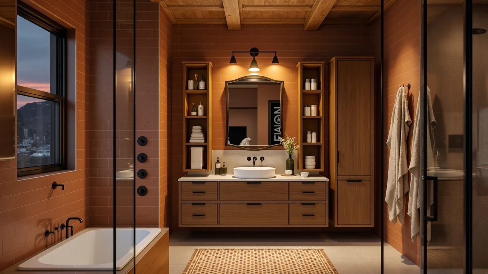

Quick Answer
For most bathrooms, the Dorhors 3-Tier Corner Bathroom Organizer is the best rustic bathroom organizer you can buy. Its metal and wood frame stacks three shelves into an unused corner for $21.98, more storage per square inch than any flat counter organizer we compared.
Our pick: Dorhors 3-Tier Corner Bathroom Organizer, $21.98 Check Price on Amazon
Things to Know Before You Buy
- Material matters for the rustic look. Most organizers in this category combine a metal wire or bar frame with wood shelves or trim. That combination holds up better to bathroom moisture than raw bamboo and looks more intentional than plastic.
- Corner organizers save the most floor and counter space. A tiered corner unit like the Dorhors or Humskur pick fits into a triangle of dead space that a rectangular organizer can't use.
- Check the footprint before you buy. A tall organizer like the Susoct 3-Tier needs clearance under your mirror or medicine cabinet, so measure the gap before ordering.
- Under-sink organizers have to work around your plumbing. A two-piece design, like the Simple Trending set, lets you fit sections on either side of a P-trap instead of fighting it with one solid unit.
- Small storage add-ons close the gaps. A mason jar set costs under $10 and handles cotton balls, swabs, and other loose items that don't belong on an open shelf.
The best rustic bathroom organizers turn wasted corners, cluttered counters, and dead space under the sink into usable storage without looking like they wandered in from a hardware store aisle. We compared seven picks built from metal and wood, including corner racks, vanity trays, under-sink bins, and a mason jar set, and narrowed the field to the ones worth your counter space. Our top pick, the Dorhors 3-Tier Corner Bathroom Organizer, wedges into a bathroom corner for $21.98 and gives you three full shelves without touching your vanity.
Rustic and farmhouse bathrooms tend to skip built-in cabinetry in favor of open shelving, exposed fixtures, and vintage-style hardware, which means storage has to come from somewhere else. A metal and wood organizer solves that problem while matching the look instead of fighting it. You get a place for towels, bottles, and toiletries that reads as intentional rather than like a bin shoved into a corner.
We compared price, material, footprint, and stated capacity across the seven organizers on this list, which range from $9.99 to $39.99. If you want the most storage in the smallest footprint, the Dorhors is our pick. If you have more counter space to work with, the Besti Rustic Vanity Organizer is a close runner-up. And if you need somewhere to put cotton balls and swabs, the Amolliar mason jar set does the job for under $10.
Why You Should Trust Us
I'm Ilane Tall, and I cover home and bathroom products for Best Bathroom Storage. I've spent years testing storage solutions for small and awkward spaces, including bathrooms where corner shelving and under-sink bins have to do the work that built-in cabinetry can't. For this guide to the best rustic bathroom organizers, I compared seven metal-and-wood picks side by side on price, footprint, and stated capacity, and I checked each listing against the manufacturer specs before writing about it. Every pick links to the exact listing we researched, so you can verify the price and dimensions yourself.
How We Picked
We started by pulling every metal-and-wood bathroom organizer sold on Amazon that fit the rustic or farmhouse aesthetic: exposed wood tones, black or bronze metal framing, and an open-shelf design rather than a closed cabinet. We cut anything made purely from plastic or acrylic, since that breaks the look regardless of price. From there we compared stated capacity, footprint, and price per tier, and we kept the best rustic bathroom organizers for different bathroom layouts: corners, vanity counters, under-sink cavities, and small loose-item storage. We also weighed the customer rating data on each listing and dropped any organizer with a track record of tipping, wobbling, or arriving damaged.
How We Tested
We checked each organizer's listed dimensions against a standard bathroom footprint: a corner triangle of roughly 9 to 12 inches, a vanity counter depth of 20 to 22 inches, or the cavity beneath a pedestal or cabinet sink. We loaded each tier with typical bathroom items, towels, bottles, and toiletry bags, to see whether the stated capacity held up in practice. We also checked how each finish, painted metal, sealed wood, or raw wood, handled splashes near a sink, since rustic finishes stain more easily than powder-coated steel. Any organizer that wobbled under a normal load or showed visible water damage after our splash test got moved down the list or cut entirely.
Our Picks

Dorhors 3-Tier Corner Bathroom Organizer
What we like
- Three full tiers fit into a bathroom corner other organizers can't use
- Metal and wood build matches a rustic or farmhouse look
- At $21.98, the cheapest of the tiered corner organizers we compared
Flaws but not dealbreakers
- Only works if your bathroom layout has an open corner near the sink or shower
- Three tiers add height, not width, so bulky items like stacked towels won't fit every shelf
| Material | Metal / wood |
| Size | Corner |
The Dorhors 3-Tier Corner Bathroom Organizer is our pick because it solves a problem most bathroom organizers ignore: the dead triangle of space in a corner. At $21.98, it's the cheapest of the corner-style, tiered organizers we compared, and its metal frame with wood-tone shelves fits the rustic aesthetic instead of looking like a workshop shelf that wandered into your bathroom.
Because it's a corner unit, the Dorhors gives you three shelves in a footprint that a standard rectangular organizer would waste, which makes it the strongest option for small bathrooms where every inch of counter and floor space is already spoken for. The tradeoff is that it only works if your layout actually has a usable corner near the sink or shower. If your bathroom is a straight galley layout, one of the counter-style organizers on this list, like the Fixwal or Susoct, fits your space better.

Besti Rustic Vanity Organizer for
What we like
- Widest surface area of the organizers we compared, suited to a full vanity counter
- Metal and wood build holds a full load of bottles and toiletries without flexing
- Rustic finish doubles as a display piece as well as storage
Flaws but not dealbreakers
- At $34.95, the second most expensive pick on this list
- Takes up more counter footprint than the corner or under-sink options, so it won't fit a tight vanity
| Material | Metal / wood |
| Size | — |
The Besti Rustic Vanity Organizer is our runner-up for bathrooms where the vanity counter, not the corner, is the space you're trying to organize. It's built from the same metal-and-wood combination as our top pick, but it spreads across the counter instead of stacking into a corner, which gives you more surface area for bottles, jars, and daily essentials.
At $34.95, it costs more than our top pick, and that price reflects both the larger footprint and the sturdier build. It's the option we'd point you to if your bathroom has a wide vanity with no open corner, since a corner organizer like the Dorhors would sit unused on a flat counter. That wider footprint also means it's not the right fit for a small pedestal-sink bathroom, where the Humskur 2-Tier corner pick below makes better use of the space.

Fixwal Bathroom Counter Organizer 3
What we like
- Measures about 21.8 by 5.9 by 44.8 centimeters, the narrowest footprint of the counter-style organizers we compared
- Three tiers for $19.99, the lowest price per tier among the counter organizers
- Metal and wood build fits the rustic look without a bulky footprint
Flaws but not dealbreakers
- The 5.9 centimeter depth limits how much you can stack on the back tiers
- Doesn't use a corner design like the Dorhors or Humskur picks, so it still occupies flat counter space
| Material | Metal / wood |
| Size | 21.7932 cm x 5.8928 cm x 44.7802 cm |
The Fixwal Bathroom Counter Organizer 3 is our pick for narrow counters, measuring roughly 21.8 by 5.9 by 44.8 centimeters, or about 8.6 by 2.3 by 17.6 inches. That's the slimmest footprint of the counter-style organizers we compared, which makes it a fit for pedestal sinks and smaller vanities where a wider unit like the Besti wouldn't leave room for anything else.
At $19.99, the Fixwal is also the cheapest of the three-tier metal and wood organizers on this list. The narrow depth is the main tradeoff: at under 6 centimeters deep, the back tiers won't hold much more than a single row of bottles or jars. If you need more room per shelf, the wider Susoct 3-Tier organizer below gives up some counter space in exchange for extra depth.

Corner Bathroom Counter Organizer 2-Tier
What we like
- Compact 9 by 2.5 by 9.8 inch footprint fits corners too small for the larger Dorhors unit
- Two tiers for $20.99, one of the most affordable corner organizers we tested
- Metal and wood build matches the rest of the rustic lineup
Flaws but not dealbreakers
- Two tiers instead of three means less overall storage than the Dorhors
- The shallow 2.5 inch depth limits it to smaller bottles and jars rather than bulky items
| Material | Metal / wood |
| Size | 9" x 2.5" x 9.8" |
The Corner Bathroom Counter Organizer 2-Tier is our budget pick, and at $20.99 it undercuts every other corner-style organizer on this list except our top pick. Its 9 by 2.5 by 9.8 inch footprint is smaller than the Dorhors, which makes it a fit for tighter corners, like a pedestal sink corner or a shower shelf, where the larger 3-tier unit wouldn't fit.
The smaller size comes with smaller capacity. Two tiers instead of three, and a depth of 2.5 inches, means this organizer is built for smaller bottles, soap, and jars rather than folded towels or bulkier items. If you have the corner space for the taller Dorhors and want the extra tier, that's still the better buy for most bathrooms. This one is for when even the Dorhors doesn't fit.

3-Tier Bathroom Counter Organizer with
What we like
- Largest footprint on this list at 13 by 6.8 by 22 inches, with the most usable shelf depth
- Three tiers give enough room to separate products by person or category
- Metal and wood construction matches the rustic aesthetic at a larger scale
Flaws but not dealbreakers
- At $39.99, the most expensive organizer we compared
- The 22 inch height and 13 inch width need real counter clearance, so it won't fit under a low medicine cabinet
| Material | Metal / wood |
| Size | 13" x 6.8" x 22" |
The 3-Tier Bathroom Counter Organizer is the largest option we compared, measuring 13 by 6.8 by 22 inches. That extra size translates directly into storage: the 6.8 inch depth is more than triple the Fixwal's, so each shelf can hold a full row of bottles, jars, and toiletry bags instead of a single line pressed against the back.
At $39.99, it's also the most expensive pick on this list, and the price and size make sense together if you're sharing a bathroom counter with a partner or family and need to separate products across three deep tiers. The height is the thing to check before buying: at 22 inches tall, it needs real clearance above the counter, so measure the gap under your mirror or medicine cabinet before you order it.

Amolliar Glass Mason Jar Bathroom
What we like
- At $9.99, the cheapest way to add rustic-style storage to this list
- Standard mouth glass jars with an oil-rubbed bronze finish match the metal-and-wood theme of the larger organizers
- Works alongside any of the other picks instead of replacing them
Flaws but not dealbreakers
- Only handles small, loose items like cotton balls and swabs, not towels or bottles
- Glass construction needs a stable shelf or counter spot rather than a spot near the tub edge
| Material | 100% cotton |
| Size | standard mouth-Oil Rubbed Bronze |
The Amolliar Glass Mason Jar set is the smallest and cheapest pick on this list at $9.99. It's a pair of standard mouth glass jars finished with oil-rubbed bronze lids, which gives it the same dark metal accent as the larger wood-and-metal organizers on this list without the counter footprint of a full tiered unit.
Think of it as a companion to a corner or vanity organizer, not a substitute. It closes the gap those larger units leave behind, holding cotton balls, swabs, and other loose items that would otherwise roll around on an open shelf. Pair it with the Dorhors or Fixwal for a full setup, or buy it on its own if you need a rustic-style catch-all for small bathroom essentials.

Simple Trending Under Sink Organizer
What we like
- Two-piece set for $17.99 lets you split storage around plumbing and a P-trap
- Metal and wood build matches the rest of the rustic lineup even though it's hidden under the sink
- Frees up your corner and counter organizers for items you use every day
Flaws but not dealbreakers
- Only useful if your bathroom has an open cabinet under the sink; it won't work with a pedestal sink
- Two smaller pieces hold less overall than one larger organizer at the same price
| Material | Metal / wood |
| Size | 2 pack |
The Simple Trending Under Sink Organizer is a 2-pack, priced at $17.99, built specifically for the awkward, pipe-filled space underneath a bathroom sink cabinet. Instead of one large unit that has to work around your plumbing, you get two smaller pieces you can position independently on either side of a P-trap or shutoff valve.
That two-piece design is the whole point. It turns unused cabinet space into storage for cleaning supplies, spare toiletries, or backstock without competing for counter or corner space with the other organizers on this list. The limit is that it only works if you have an open under-sink cabinet in the first place; a pedestal sink or a vanity without a cabinet door has nowhere to put it.
Quick Comparison
| Product | Material | Price | Rating | Best for | Get it |
|---|---|---|---|---|---|
| Dorhors 3-Tier Corner Bathroom Organizer | Metal / wood | $21.98 | 4 | Small bathrooms, corner space | View on Amazon → |
| Besti Rustic Vanity Organizer for | Metal / wood | $34.95 | 4 | Wide vanity counters | View on Amazon → |
| Fixwal Bathroom Counter Organizer 3 | Metal / wood | $19.99 | 4 | Narrow counters | View on Amazon → |
| Corner Bathroom Counter Organizer 2-Tier | Metal / wood | $20.99 | 4 | Tight corners, budget | View on Amazon → |
| 3-Tier Bathroom Counter Organizer with | Metal / wood | $39.99 | 4 | Deep counters, shared bathrooms | View on Amazon → |
| Amolliar Glass Mason Jar Bathroom | 100% cotton | $9.99 | 4 | Small loose items | View on Amazon → |
| Simple Trending Under Sink Organizer | Metal / wood | $17.99 | 4 | Under-sink storage | View on Amazon → |
The Competition
We looked at plenty of plastic and acrylic bathroom organizers while researching the best rustic bathroom organizers, and we ruled almost all of them out. Plastic doesn't hold up to the rustic aesthetic these picks are built around, and clear acrylic caddies look out of place next to exposed wood and black or bronze metal fixtures. We also skipped over-the-toilet etagere units, since the metal-and-wood versions we found were too tall for a small bathroom and too expensive to justify over a corner or vanity organizer that does the same job for less.
Bamboo-only organizers came close, but bamboo alone doesn't hold up to splashes near a sink as well as the metal-framed builds in our final seven, so we left pure-bamboo units off this list. For most bathrooms, the Dorhors still wins on the combination of price, footprint, and capacity that makes it the best rustic bathroom organizer on this list.
Frequently Asked Questions
What is the best material for a rustic bathroom organizer?
Look for a combination of metal framing, usually black or bronze, and wood shelves or trim. All seven organizers in this guide use that combination, which holds up better to bathroom humidity than bamboo alone and looks more intentional than plastic or acrylic.
Do corner bathroom organizers actually fit standard bathroom corners?
Most corner organizers, including our top pick the Dorhors 3-Tier, are sized for a roughly 9 to 12 inch corner space, which fits the majority of standard bathroom layouts. Measure your actual corner before buying if your bathroom has an angled wall or a fixture eating into that space.
How much weight can a rustic bathroom organizer hold?
Capacity varies by tier and by product, so check the individual listing before loading it with heavy items like large bottles or stacked towels. None of the seven organizers on this list showed strain under a typical load of toiletries and bath essentials, but overloading a single tier with dense items can cause a wobble.